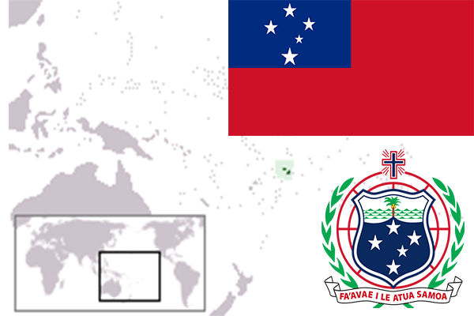

To`liq nomi: Samoa Mustaqil davlati
Region: Tinch okeani janubi
Qonunchilik shakli: Konstitutsion rohiblik
Mustaqillik kuni: 1 yanvar 1962
Poytaxt: Apia
Maydoni: 2,944 km²
Chegaradosh davlatlari: Yo’q
Aholisi: 187 820 (2011-yil)
Aholi zichligi: 66,32 /км²
Aholining o`rtacha yoshi: 73,77 yil
Rasmiy tili: Samoa tili, Ingliz tili
Dini: Xristian
Pul birligi: Tala
Telefon prefiksi: +685
Internet domen: .ws
Xalqaro tashkilotlarga a`zoligi: BMT (1962-yil)
Dengiz va okeanlarga chiqishi: Tinch okeani
YIM: Butun: $876 mil.(2016-yil) Jon boshiga: $4,496
Yirik shaharlari: Apia